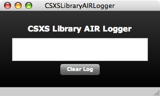
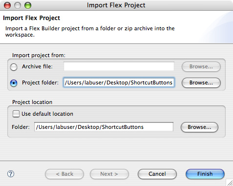
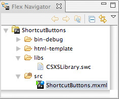
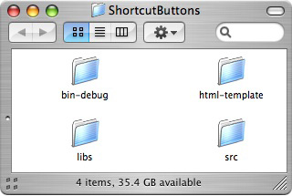
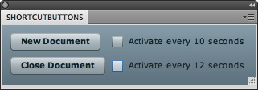

Shortcut Buttons Panel: CSXS Logger AIR Debugger (Optional)
The fifth part of the Shortcut Buttons Panel is debugging with the CSXS Logger AIR (Adobe Integrated Runtime) Application. The developer will install the CSXS Logger AIR Application to the computer. The developer will program in ActionScript to set up a logging connection to the CSXS Logger AIR Application. The result is using the CSXS Logger AIR Application to view the debugging communication between the SWF file, the corresponding JavaScript file, and Adobe Photoshop.
Instructions:
- Open the utilities folder included with the Adobe Photoshop Panel Developer's Guide.
- Double-click the CSXSLibraryAIRLogger.air file to install the CSXS Logger AIR Application.
- The application installed is called CSXSLibraryAIRLogger.air. When opened, the CSXS Library Logger AIR Application opens as a window like seen below:
 - Close the utilities folder.
- Open Adobe Flex Builder.
- If the ShortcutButtons project fails to show up:
- Go to File > Import > Flex Project....
- Select Project and Browse... to the ShortcutButtons folder on the desktop.
- Deselect Use default location.
- Press Finish. 
- Go to Flex Navigator or go to Window > Flex Navigator.
- Double-click on ShortcutButtons.mxml if the Design Area is empty. 
- Go to Source Mode by selecting Source under the ShortcutButtons.mxml tab or go to Window > Switch Source/Design Mode.
- The red colored text are the changes made to ShortcutButtons.mxml:
<?xml version="1.0" encoding="utf-8"?> <mx:Application xmlns:mx="http://www.adobe.com/2006/mxml" layout="absolute" creationComplete="init()" xmlns:csxslogtargets="com.adobe.csxs.logging.targets.*"> <mx:Script> <![CDATA[ import com.adobe.csxs.core.CSXSInterface; import mx.logging.*; public var newDocTimer:Timer = new Timer(10000); public var closeDocTimer:Timer = new Timer(12000); private static var logConnection:LocalConnectionTarget = null; public function callAddDocument():void{ CSXSInterface.instance.evalScript("addDocument"); } public function callCloseDocument():void{ CSXSInterface.instance.evalScript("closeDocument"); } public function init():void{ CSXSInterface.instance.evalScript("PhotoshopPersistent"); newDocTimer.addEventListener(TimerEvent.TIMER,newDocTimeHandler); closeDocTimer.addEventListener(TimerEvent.TIMER,closeDocTimeHandler); newDocTimer.start(); closeDocTimer.start(); } public function newDocTimeHandler(event:TimerEvent):void{ if(actNewDoc.selected) callAddDocument(); } public function closeDocTimeHandler(event:TimerEvent):void{ if(actCloseDoc.selected) callCloseDocument(); } public static function logger():ILogger{ if(!logConnection){ logConnection = new LocalConnectionTarget("_test"); logConnection.filters = ["*"]; logConnection.level = LogEventLevel.ALL; logConnection.includeDate = true; logConnection.includeTime = true; logConnection.includeCategory = true; logConnection.includeLevel = true; } return Log.getLogger("ConnectNow"); } ]]> </mx:Script> <mx:Button x="10" y="10" label="New Document" click="callAddDocument();"/> <mx:Button x="10" y="40" label="Close Document" click="callCloseDocument();"/> <mx:CheckBox x="135" y="10" label="Activate every 10 seconds" id="actNewDoc"/> <mx:CheckBox x="135" y="40" label="Activate every 12 seconds" id="actCloseDoc"/> <csxslogtargets:LocalConnectionTarget level="0" includeDate="true" includeTime="true" includeCategory="true" includeLevel="true"> <csxslogtargets:filters> <mx:Array><mx:String>com.adobe.csxs.*</mx:String></mx:Array> </csxslogtargets:filters> </csxslogtargets:LocalConnectionTarget> <csxslogtargets:SocketTarget level="0" includeDate="true" includeTime="true" includeCategory="true" includeLevel="true"> <csxslogtargets:filters> <mx:Array><mx:String>com.adobe.csxs.*</mx:String></mx:Array> </csxslogtargets:filters> </csxslogtargets:SocketTarget> <mx:TraceTarget level="0" includeDate="true" includeTime="true" includeCategory="true" includeLevel="true"> <mx:filters> <mx:Array><mx:String>com.adobe.csxs.*</mx:String></mx:Array> </mx:filters> </mx:TraceTarget> </mx:Application>
Code Walkthrough: The additional code (the red colored text) are required for communication to the CSXS Logger AIR Application. Developers can use the same code for other panels created to view the debugging communication between the SWF file, the corresponding JavaScript file, and Adobe Photoshop.
- Go to Run > Run ShortcutButtons to preview the design area in the web browser.
Note: The buttons and checkboxes will not work in the web browser because the target is Adobe Photoshop. - Close the web browser.
- Close Adobe Flex Builder.
- Open the ShortcutButtons folder on the desktop.
 - Open the bin-debug folder.
- Copy ShortcutButtons.swf into the Panels folder under the Adobe Photoshop CS5\Plug-ins\ folder located under:
- Applications for Macintosh
- Program Files for Windows
- Open CSXSLogger.
- Open Adobe Photoshop.
- Go to Windows > Extensions > ShortcutButtons.
- The Shortcut Buttons Panel opens as a panel like seen below:
 - Click on New Document.
- Click on Close Document.
- The output from the CSXSLogger should be similar to below:
8/19/2008 15:55:02.348 [INFO] com.adobe.csxs.external.RecieveExternalEvents Registered ExternalInterface callback: 'ExtensionEventHandler' successfully. ------------------ 8/19/2008 15:55:02.354 [INFO] com.adobe.csxs.external.DispatchExternalRequestAsync DispatchExternalRequestAsync singleton instantiated successfully. ------------------ 8/19/2008 15:55:02.355 [INFO] com.adobe.csxs.core.CSXSInterface CSXSInterface singleton instantiated successfully. CSXSInterface is ready to recieve commands ------------------ 8/19/2008 15:55:02.359 [DEBUG] com.adobe.csxs.external.CommunicationUtils [DispatchingRequest functionName="PhotoshopPersistent" params=""] ------------------ 8/19/2008 15:55:02.363 [ERROR] com.adobe.csxs.external.CommunicationUtils [Null result while dispatching request functionName="PhotoshopPersistent"] ------------------ 8/19/2008 15:55:02.365 [DEBUG] com.adobe.csxs.external.CommunicationUtils [Result="[RequestResult status="InvalidReturnParams" data=null]"] ------------------ 8/19/2008 15:55:04.000 [DEBUG] com.adobe.csxs.external.RecieveExternalEvents [RecievedEvent event="PlugPlugLoseFocus"'] ------------------ 8/19/2008 15:55:04.064 [DEBUG] com.adobe.csxs.external.CommunicationUtils [DispatchingRequest functionName="addDocument" params=""] ------------------ 8/19/2008 15:55:04.819 [INFO] com.adobe.csxs.external.CommunicationUtils [RequestResult after parsing result="[RequestResult status="PlugPlugRequestComplete" data=undefined]" ] ------------------ 8/19/2008 15:55:04.821 [DEBUG] com.adobe.csxs.external.CommunicationUtils [Result="[RequestResult status="PlugPlugRequestComplete" data=undefined]"] ------------------ 8/19/2008 15:55:05.343 [DEBUG] com.adobe.csxs.external.RecieveExternalEvents [RecievedEvent event="PlugPlugLoseFocus"'] ------------------ 8/19/2008 15:55:05.423 [DEBUG] com.adobe.csxs.external.CommunicationUtils [DispatchingRequest functionName="closeDocument" params=""] ------------------ 8/19/2008 15:55:05.566 [INFO] com.adobe.csxs.external.CommunicationUtils [RequestResult after parsing result="[RequestResult status="PlugPlugRequestComplete" data=undefined]" ] ------------------ 8/19/2008 15:55:05.567 [DEBUG] com.adobe.csxs.external.CommunicationUtils [Result="[RequestResult status="PlugPlugRequestComplete" data=undefined]"] ------------------
Code Walkthrough: There are three categories shown in the CSXS Logger:
[INFO]- Information from the CSXS such as opening and closing the panel.[DEBUG]- Actions committed to and from the CSXS such as calling a function in the JavaScript file and passing parameters.[ERROR]- Errors committed to and from the CSXS such as calling a function that is not existent in the JavaScript file.
There is only one error becausePhotoshopPersistentis not a function within the JavaScript file.PhotoshopPersistentis actually a reserved word in Adobe Photoshop. Note: For more information, see Adobe Photoshop Reserved Words. The keywordPlugPlugis the interface between the SWF file and the JavaScript file. - Close the Shortcut Buttons Panel.
- Close Adobe Photoshop.